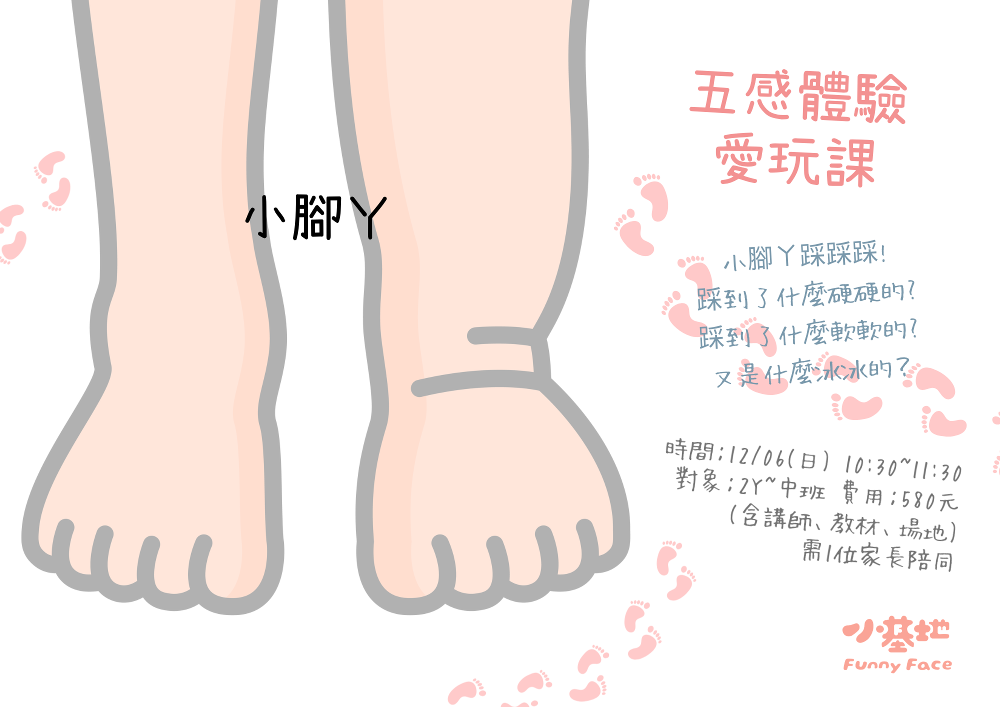
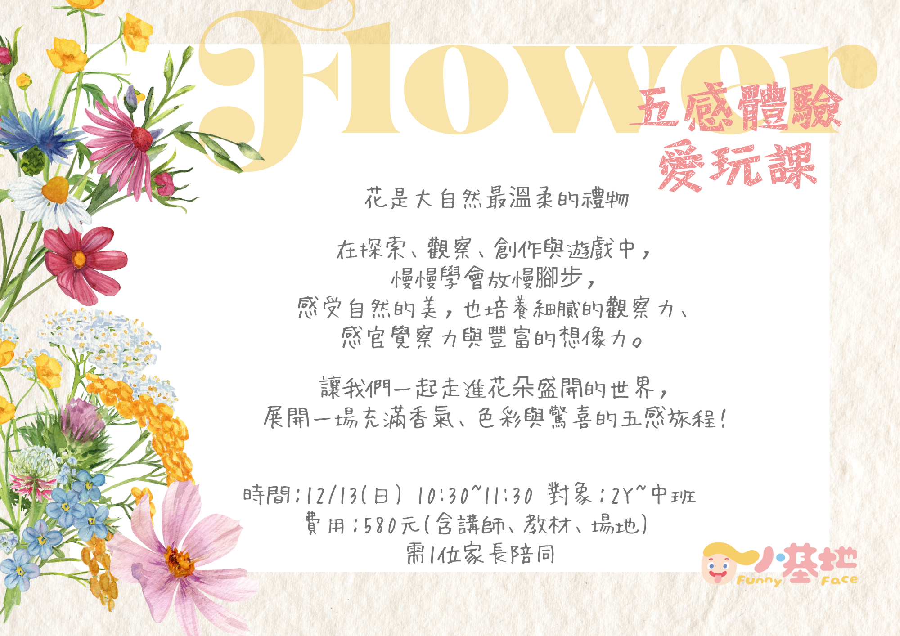

👣
小腳ㄚ
脫下鞋襪，從腳尖輕輕碰觸到踩一踩、走一走，發現腳底平常沒注意到的觸感。
每一場都有自己的主題與活動頁；系列共同須知集中放在五感首頁，家長不需要重複找資料。
脫下鞋襪，從腳尖輕輕碰觸到踩一踩、走一走，發現腳底平常沒注意到的觸感。
以花朵為主題，延續每月五感活動的節奏，讓孩子透過媒材、觸感與創作慢慢探索。
一月場以過年為主題，時間、對象與參加方式和每月五感活動相同；詳細玩法與海報會再補上。
五感體驗為 2 歲至幼兒園中班設計。孩子可能馬上投入，也可能先站在旁邊看一看；活動會保留觀察、試探與休息的空間，讓每個孩子依照自己的節奏靠近媒材、認識身體，也練習表達喜歡與不喜歡。
先看看今天會使用的媒材與玩法，讓孩子慢慢靠近、準備開始。
摸、踩、聞、看、移動，慢慢發現媒材和身體的變化。
沒有標準答案，把當下的感受變成孩子自己的作品。
請依孩子是否參加過 FunnyFace／HappyFace 活動，選擇對應的報名入口。
脫下鞋襪，讓小腳ㄚ也來一場探索。從腳尖輕輕碰觸，到踩上去、走一走，陪孩子發現軟硬、粗細與身體移動時的不同感受。

活動運用不同媒材，邀請孩子用小腳踩踩看，感受平常穿著鞋襪時不容易察覺的細節。每個孩子都有自己的探索方式，我們會陪伴孩子依照自己的步調嘗試，用動作、表情或語言表達發現。
新生請先填寫報名前置表單；舊生可直接透過官方 LINE 報名。
十二月的五感主題，讓孩子從花朵的顏色、形狀與感受出發，透過媒材、觸感和創作留下自己的 FLOWER。

每月五感活動會更換主題與媒材。FLOWER 場次以花朵為主題，讓孩子用眼睛觀察、用身體感受，再依照自己的方式參與創作。
新生請先填寫報名前置表單；舊生可直接透過官方 LINE 報名。
過年主題
一月場會以過年為主題，帶孩子從年節色彩與感官媒材展開探索；詳細玩法與海報確認後會再補上。
這一場將從孩子熟悉的過年氣氛出發，延續五感活動的探索節奏。詳細媒材、玩法與活動介紹確認後會直接補進這一頁。
新生請先填寫報名前置表單；舊生可直接透過官方 LINE 登記。